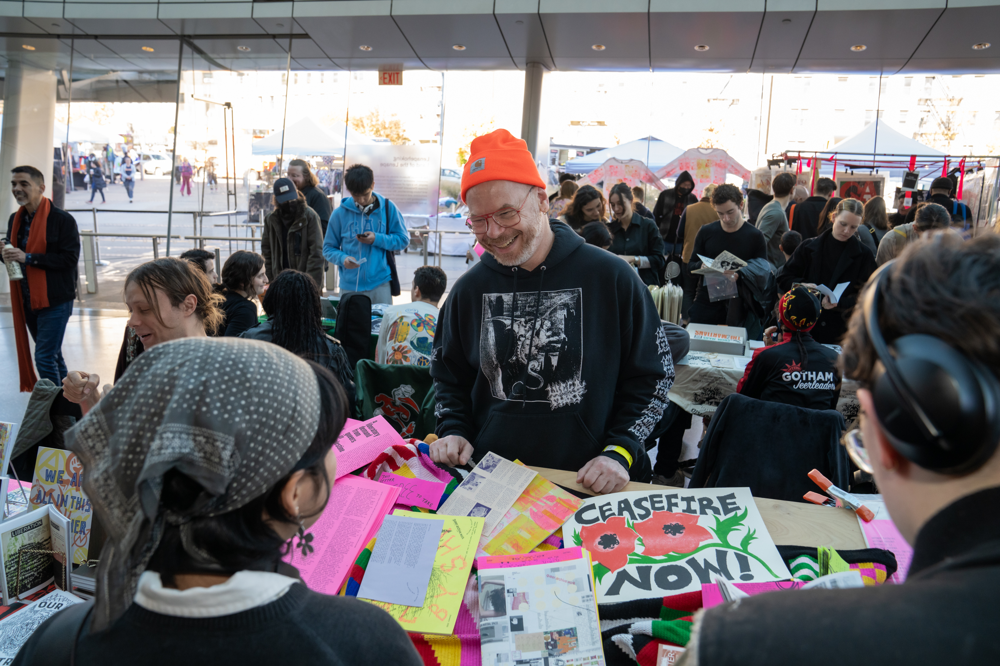
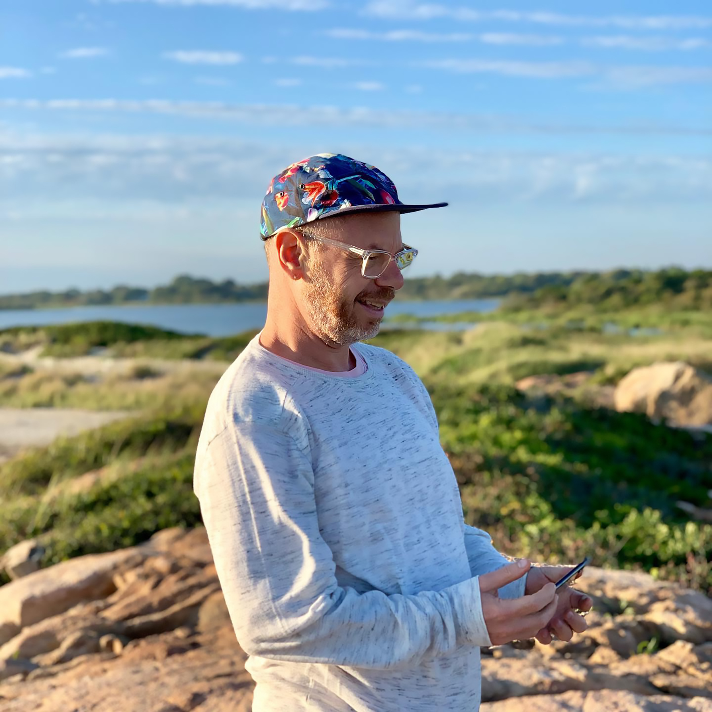

Project A TBD.

Project B TBD.
Project A TBD.
Project B TBD.
This talk describes a publishing practice, told in a series of scenes, non-chronologically. It's a cinematic timeline, told in queer time. Recently, I was in a very bad accident. I tripped in the street and started flying through the air. I landed and broke 12 bones. For a long time, I couldn’t move around. I couldn’t go to school where I was needed, where I’m the head of the graphic design department. I couldn’t go to the studio where I do my work and where I help organize community. For several months, I had a lot of time to reflect. I tried to understand what had happened, and one of the ways I did this was by making these images. I started feeding the details of my accident into a text-to-image generator. I wanted to reconstruct the accident, so I could see it from outside my body. I wanted to see if these images could reveal something about the event, like evidence. Maybe it could show me what had really happened. Maybe I could learn something about my experience that my memory couldn’t provide. I generated thousands of these images; it started to resemble an archive. This was my way of slowing down what had happened. I wanted to occupy the space of that moment, and it felt like this tool could help me.
News 1
Paul Soulellis is an artist and educator based in Providence, RI. His practice includes teaching, writing, and experimental publishing, with a focus on queer methodologies and network culture. He is the founder of Queer.Archive.Work, a non-profit organization that supports artists, writers, and activists with access to space, tools, and other resources for queer publishing. He is also Department Head and Associate Professor of Graphic Design at Rhode Island School of Design.
Paul Soulellis is an American artist, graphic designer, publisher, and educator. He maintains his practice in Providence, Rhode Island. His work includes teaching, writing, and experimental publishing, with a focus on queer methodologies and network culture. His writings and work are cited in scholarly research, and his publications are collected and exhibited worldwide and on the internet.
Soulellis is the founder of Queer.Archive.Work, a non-profit organization that joined Binch Press in 2021 to create a 2,000 sq. ft. library, print studio, and residency that supports a growing membership-based community of artists and writers. Binch/QAW has a mission to center Rhode Island-based queer and trans BIPoC voices with access to space and resources for experimental publishing. Studio projects include Open Library Hours, Community Supported Art, and the Queer and Trans Zinefest.
Soulellis is also the founder of Library of the Printed Web, a physical archive devoted to web-to-print artists’ books, zines and other printout matter. The collection of 250 works was acquired by The Museum of Modern Art Library in New York in 2017. Soulellis maintains his own art practice centered on publishing, and his books and zines have featured the work of hundreds of contemporary artists and writers. His work is in special collections at The Museum of Modern Art; The Metropolitan Museum of Art; Whitney Museum of American Art; Walker Art Center; Yale University; Tate Britain; and many other institutions.
He has worked internationally as an artist-in-residence, including at the American Academy in Rome (Rome, Italy, 2011), Nes (Skagaströnd, Iceland, 2013), Mildred’s Lane (Narrowsburg, NY, 2016), Dispersed Holdings (New York, USA, 2016), ArtCenter South Florida (Miami, USA, 2018), and the Internet Archive (San Francisco, CA, 2019).
He is invited to speak about his work and present his ideas about radical publishing internationally. Most recently, he presented “Survival by Sharing” at the “Publishing as Worldview” conference, hosted by the Korean Society of Typography in Seoul, Republic of Korea. In 2021 he presented “What is queer typography?” at the Type Drives Communities Conference, hosted by the Type Directors Club, as well as “Urgent Publishing After the Artist’s Book: Making Public in Movements Towards Liberation,” at the Contemporary Artists’ Book Conference, hosted by the Center for Book Arts at Printed Matter’s NY Art Book Fair. In 2019 he presented “Urgentcraft” at the Eyeo Festival in Minneapolis, as well as at “The Conference” in Malmö, Sweden. In March 2018, he was a featured speaker in the Design Insights series, hosted by the Walker Art Center in Minneapolis.
Soulellis also maintains a robust writing practice, and his texts circulate widely. “Bad Archives” was recently published in the Journal of Cinema and Media Studies, edited by Shannon Mattern, and his “Search, Compile, Publish” essay was anthologized in Publishing Manifestos in 2022, published by MIT Press. His essay “The Post as Medium” was featured in the widely-acclaimed book The Art Happens Here: Net Art Anthology, published by Rhizome/New Museum. Soulellis was a contributing editor at Rhizome from 2015–2018.
Soulellis is Department Head and Associate Professor of Graphic Design at the Rhode Island School of Design.
 